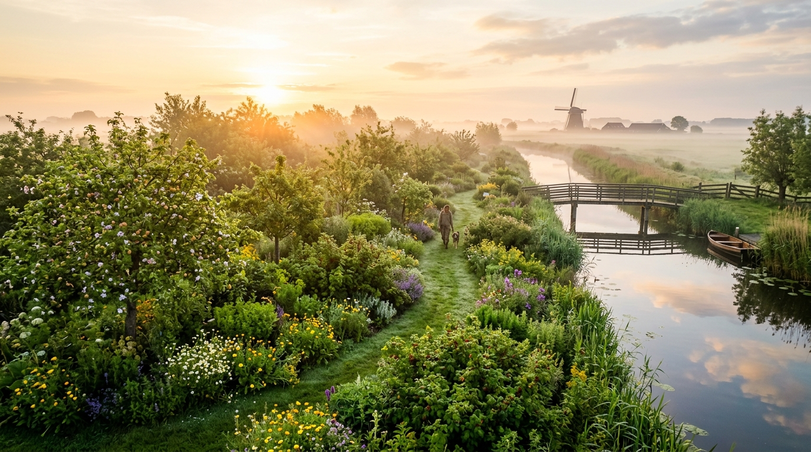
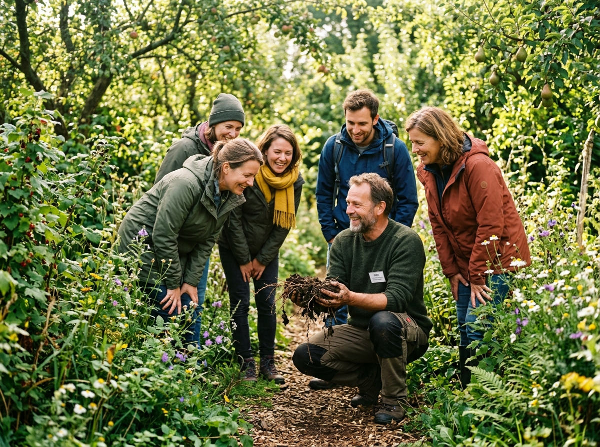
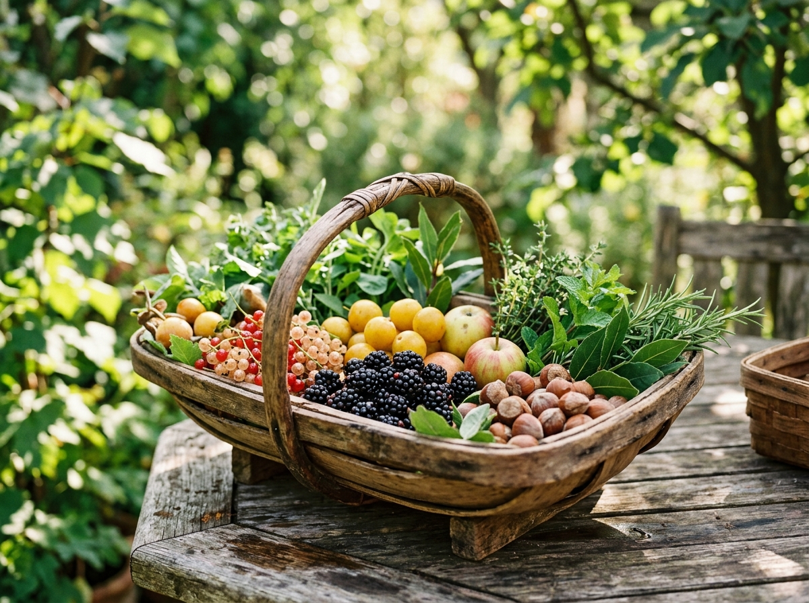

Aangeplant voorjaar 2026
01
Het Plukgedeelte
Het meest toegankelijke deel van het voedselbos, ontworpen voor kleinschalige oogst, wandelaars en plukbezoekers. Rijk aan kleinfruit, theekruiden en bloemen.

Langs de oevers van de Kromme Mijdrecht, direct grenzend aan natuurgebied De Groene Jonker, laten we bijna 1 hectare veengrond opbloeien tot een rijk, eetbaar ecosysteem vol leven, biodiversiteit en gezonde oogst.
In het typische veenweidegebied tussen Utrecht en Zuid-Holland startte Koen de Ridder in het najaar van 2025 met de realisatie van Bloeiende Landen. Waar voorheen monocultuur grasland lag, ontstaat nu een meerlagig eetbaar bos.
Klassieke veenweides kampen met bodemdaling, koolstofuitstoot door oxidatie en verlies aan biodiversiteit. Met regeneratieve agroforestry keren we dit proces om: we houden water vast, voeden het bodemleven en bouwen organische stof op, terwijl we tegelijkertijd bessen, noten, fruit en theekruiden oogsten.
Herstel van schimmelnetwerken (mycorrhizae) en bodemorganismen zonder kunstmest of bestrijdingsmiddelen.
Een ecologische stapsteen voor vogels, wilde bijen, vlinders en amfibieën direct langs de Kromme Mijdrecht.
Ondersteund door het SBNL Natuurfonds en onderdeel van het landelijke netwerk Voedsel uit het Bos.
Een voedselbos bootst de veerkracht en zelfredzaamheid van een oerbos na. We werken niet tegen de natuur, maar dansen mee met haar natuurlijke cycli.

Minder inklinking & hogere grondwaterstanden
Op ons perceel van 9.734 m² combineren we drie complementaire systemen die elk een eigen ecologische en maatschappelijke functie vervullen.
Het meest toegankelijke deel van het voedselbos, ontworpen voor kleinschalige oogst, wandelaars en plukbezoekers. Rijk aan kleinfruit, theekruiden en bloemen.
Gericht op langdurige, hoogcalorische en voedzame opbrengsten. Een combinatie van hoogstam notenbomen, traditionele fruitrassen en meerjarige eetbare gewassen.
Een natuurzone vol kronkelende struinpaadjes, waterpoelen, schaduwrijke bankjes en inheemse struiken die naadloos overvloeien in natuurgebied De Groene Jonker.
Net als een oerwoud benut een voedselbos zonlicht, water en ruimte in zeven verschillende hoogtelagen. Klik op een laag om de werking en soorten te ontdekken.
De majestueuze ruggengraat van het voedselbos
De hoogste bomen vangen het eerste felle zonlicht, breken harde polderwinden en creëren een mild microklimaat voor de onderliggende gewassen. Hun diepe wortels pompen mineralen uit diepere grondlagen omhoog en voeden het bodemnetwerk.
In tegenstelling tot een gewone akker levert een voedselbos vrijwel het hele jaar door iets lekkers, voedzaams of geneeskrachtigs.
We oogsten kleinschalig en met respect voor de fauna. Wat overblijft voedt de vogels van De Groene Jonker en keert terug naar de bodem als rijke humus.
De sapstromen komen op gang. De kruidenlaag explodeert met verse theekruiden, vroege scheuten en daslook, gevolgd door geurige vlierbloesem en rabarber.

Of je nu nieuwsgierig bent naar voedselbossen, je eigen tuin wilt vergroenen, of met je handen in de aarde wilt meebouwen: je bent van harte welkom!
Laat ons weten hoe je Bloeiende Landen wilt beleven. We reageren snel en persoonlijk.
Bloeiende Landen ligt op een magische plek: direct aan het slingerende riviertje de Kromme Mijdrecht, precies op de grens van Zuid-Holland en Utrecht.
Kade 9B, Zevenhoven (Gemeente Nieuwkoop)
Direct naast natuurgebied De Groene JonkerPrachtige fietsroutes over de dijk langs de Kromme Mijdrecht, bereikbaar vanuit Woerden, Alphen aan den Rijn, Mijdrecht en Uithoorn.
Parkeergelegenheid nabij De Groene Jonker. We moedigen carpoolen en langzaam reizen per fiets aan.
Tip voor natuurliefhebbers: Combineer je bezoek aan Bloeiende Landen met een vogelwandeling door De Groene Jonker, waar lepelaars, grutto's en blauwborsten broeden!
Alles wat je wilt weten over voedselbossen, onze filosofie en een bezoek aan Bloeiende Landen.
Bloeiende Landen is in ontwikkeling en kwetsbare planten moeten eerst diep wortelen. Daarom is het terrein momenteel geopend tijdens rondleidingen, georganiseerde meewerkdagen en Open Voedselbossendagen. Zo zorgen we dat de jonge bomen niet vertrapt worden en het bodemleven beschermd blijft.
Absoluut niet! Wij werken 100% gif- en kunstmestvrij volgens regeneratieve agroforestry principes. Schadelijke insecten worden op natuurlijke wijze gereguleerd door natuurlijke vijanden (vogels, sluipwespen, lieveheersbeestjes) en bodemvruchtbaarheid wordt opgebouwd door stikstofbindende bomen (zoals zwarte els) en diepwortelende kruiden (zoals smeerwortel).
Traditionele ontwatering van veengrond leidt tot oxidatie, bodemdaling en enorme CO2-uitstoot. In een voedselbos houden we het grondwaterpeil hoger en bedekken we de bodem permanent met levende wortels en bladmassa. Dit voorkomt uitdroging, beschermt het veen en legt juist koolstof vast in de bodem.
Je kunt meedoen met onze vrijwilligersdagen, een rondleiding boeken of een boom sponsoren. Ook steunen we educatieprojecten voor lokale scholen. Neem contact op via koen@bloeiendelanden.nl voor meer informatie.
Het project ontving financiële stimulans van het SBNL Natuurfonds ter versterking van biodiversiteit en het landschap, en staat geregistreerd bij de landelijke beweging Voedsel uit het Bos (voedseluithetbos.nl).
Heb je een vraag, wil je een lezing organiseren of meedenken over ons regeneratieve voedsellandschap? Neem gerust contact op met Koen.
We horen graag van je!